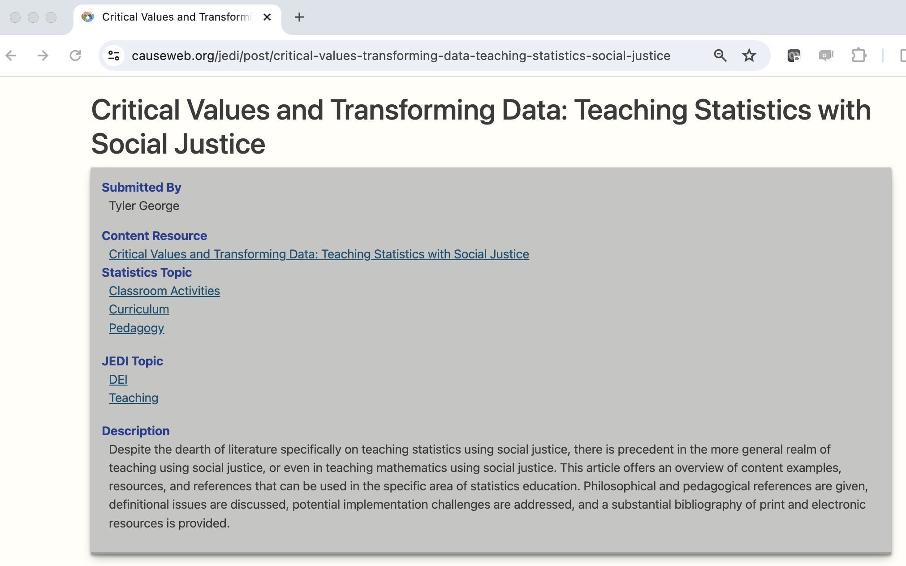
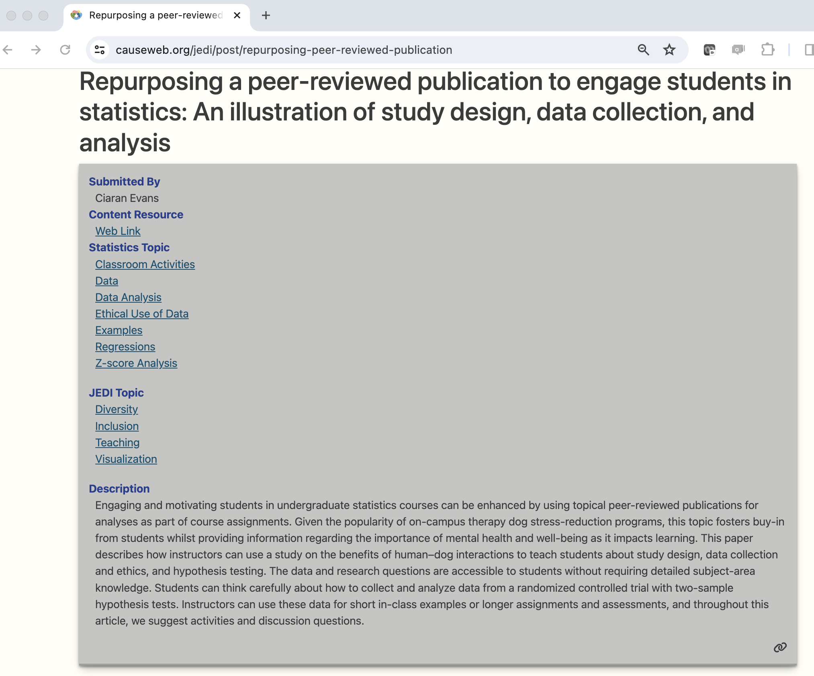
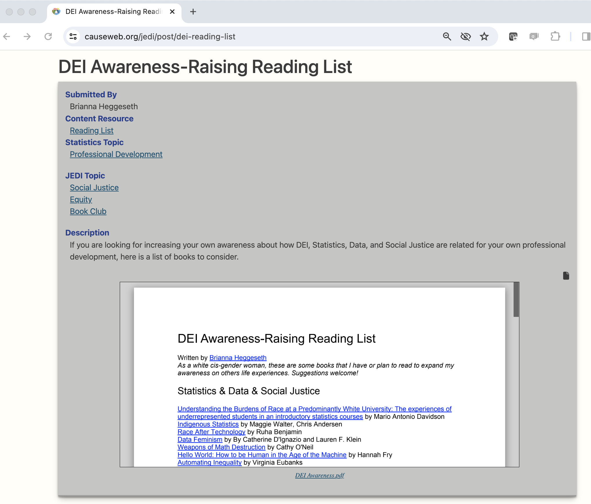

Resources for JEDI-Informed Teaching of Statistics and Data Science
Amstat News
The following entry originally appeared in the January 2024 issue of Amstat News, the monthly membership magazine of the American Statistical Association.
JEDI-CAUSE
If you’ve been reading the JEDI corner over the last few years, you know that an ASA initiative, the JEDI Outreach Group, has worked to become an umbrella organization for justice, equity, diversity, and inclusion (JEDI) in all things statistics and data science. Some of the original JEDI committee members are also actively involved in educational work and revitalizing their classrooms with a JEDI lens. Very early in the discussions on how to bring JEDI into the classroom, we realized that a central repository for JEDI-themed educational resources would be incredibly helpful for the entire community.
CAUSE (Consortium for the Advancement of Undergraduate Statistics Education), also supported by the ASA, is a national organization whose mission is to support the advancement of undergraduate statistics education. They support advancing undergraduate statistics education by focusing on resources, professional development, outreach, and research. CAUSE is also the driving force behind USCOTS and eCOTS, two conferences focusing on teaching statistics and data science. Their flagship endeavor is a website with seemingly unending resources across each of their missions. If you are an educator who is not familiar with CAUSE, we highly recommend that you peruse the website at https://causeweb.org/.
Recently, a group of individuals who were involved in both JEDI and CAUSE came together to create a space to host resources for JEDI-informed teaching of statistics. We are indebted to the CAUSE leadership for providing us space at https://causeweb.org/jedi/ and to those in the JEDI community for submitting JEDI-based educational materials.
What materials are on the JEDI-CAUSE website?
Each entry on the JEDI-CAUSE website is an item that is relevant to statistics and data science education and has a JEDI theme. The entries are broken down into classroom areas such as examples, data, professional development, activities, pedagogy, and humanizing edutainment. The entries are also broken down by JEDI content areas such as racial discrimination, climate change, criminal justice, gender discrimination, and bias.
To get the user started, the top of the page provides a list of the most common searches. Additionally, by random selection, the website spotlights a few entries from the database. Some of the entries are classroom activities, some are datasets, some are professional resources. We welcome all different types of entries and have provided a few examples that might be relevant to your teaching.


The entries found on the JEDI-CAUSE website are varied. One can find curated lists of resources, activities geared to a specific topic, data sets, and links to resources found on other websites.
How can I contribute?
We hope that the JEDI-CAUSE website will be helpful for you as you rethink your classroom and the experience of your students. If you have materials to contribute, submitting content is very easy! You can submit online where you will be asked a few details about yourself, the title & description of the entry, and a link to materials (optional) or files to upload (optional).
Alternatively, Is there a resource you’d like to see on the JEDI-CAUSE website but you don’t have materials to share? Feel free to use this google form to send us ideas for good JEDI-related resources for teaching statistics and data science.
Special shout-out to Andrew Ferguson at Penn State who has tirelessly put together the website for us. Thank you, Andrew!